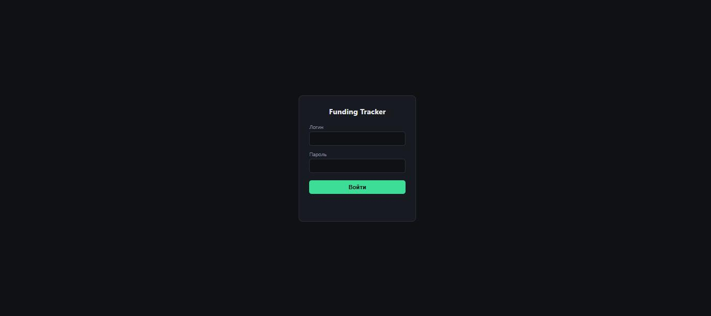
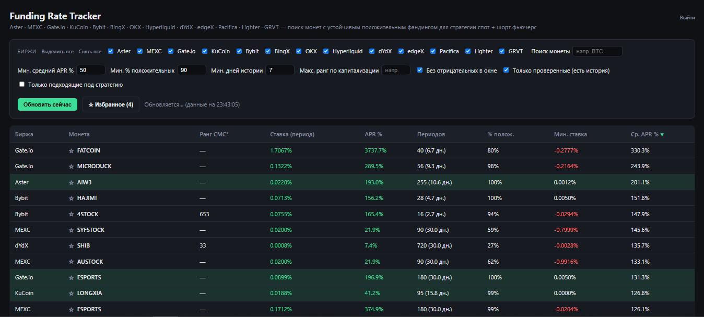
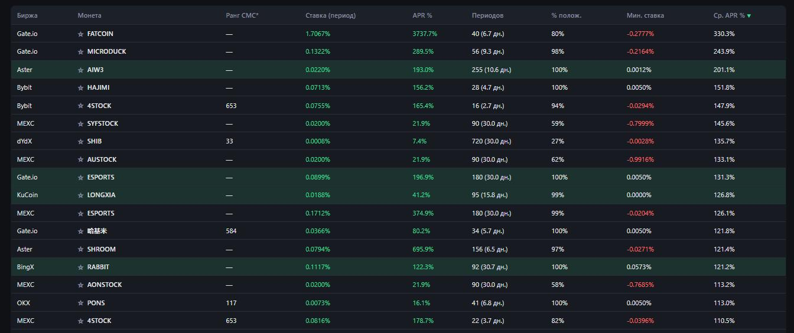
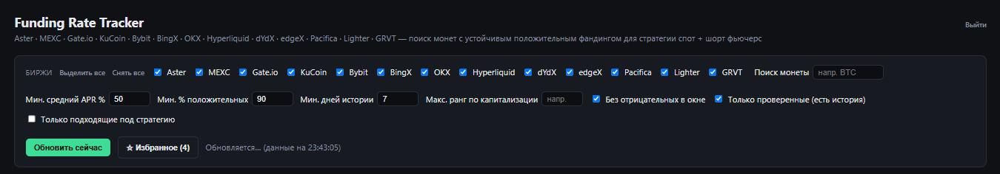
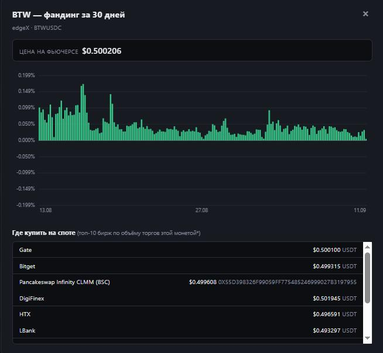
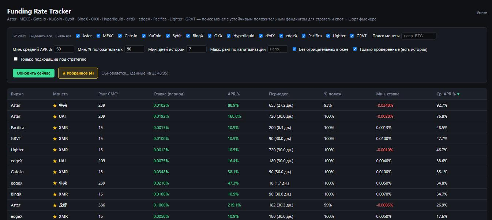
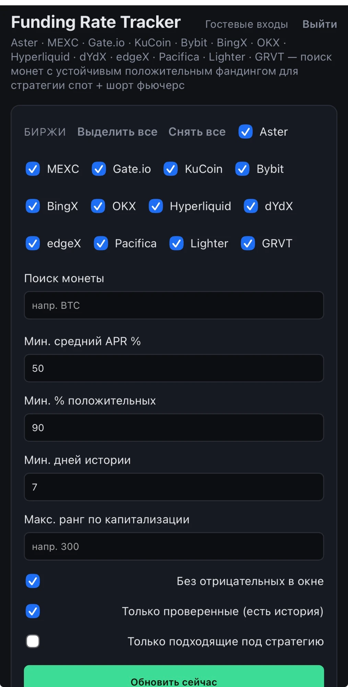

Тебе выдали доступ к приватному инструменту, который каждые 5 минут сканирует
13 бирж и ищет монеты с устойчиво положительным фандингом — платой, которую
лонги платят шортам на бессрочных фьючерсах. Ниже — что это значит, как читать таблицу и
на что смотреть, прежде чем куда-то заходить деньгами.
13 биржокно статистики — 30 днейстратегия — спот + шорт перп (cash-and-carry)обновление — раз в 5 минут
Что это такое
Funding Tracker — это не биржа и не бот. Это только экран мониторинга:
он читает публичные данные бирж, ничего не покупает и не хранит твои ключи. Его единственная
задача — сузить сотни бессрочных фьючерсов до горстки монет, где ставка фандинга держится
положительной достаточно долго, чтобы под неё имело смысл открывать позицию.
Каждая строка таблицы — это пара «биржа + монета». Сканер закрепляет свой снимок рынка
не по текущей ставке, а по среднему APR за последние 30 дней — так
одна случайно высокая выплата не выведет монету в топ, если до этого фандинг был низким
или отрицательным.
Как работает стратегия
На бессрочном фьючерсе нет даты экспирации, поэтому цену перпа держат рядом со спотовой
через funding rate — периодическую выплату между теми, кто в лонге, и
теми, кто в шорте. Когда ставка положительная, лонги платят шортам; отрицательная — наоборот.
Выплата происходит каждые 1–8 часов в зависимости от биржи и монеты.
Идея cash-and-carry — убрать риск движения цены и оставить только эту
выплату:
Купить монету на споте (лонг) — на любой удобной бирже.
Одновременно открыть шорт на бессрочный фьючерс той же монеты на ту же сумму.
Цена вырастет — потеряешь на шорте ровно столько, сколько заработаешь на споте, и наоборот. Позиция рыночно-нейтральна.
Единственное, что остаётся — фандинг, который ты как шорт получаешь каждый период, пока ставка положительная.
Это не бесплатные деньги
Ставка может в любой момент уйти в минус — тогда платить будешь уже ты. Комиссии входа
и выхода на двух ногах сразу съедают часть тонкого фандинга. Спот и перп обычно живут на
разных биржах или сетях — это дополнительный операционный риск (перевод средств, маржа на
перп-ноге при резком движении цены). Средний APR в таблице — это то, что было за
последние 30 дней, а не гарантия того, что будет дальше.
Как пользоваться сканером
1 Вход
Открой ссылку сканера и введи логин и пароль, которые тебе дал администратор. Сессия
держится 30 дней — заново логиниться при каждом заходе не придётся.

Страница входа
2 Общий вид
После входа открывается сама таблица: сверху — список бирж и фильтры, снизу — строки
«биржа + монета», отсортированные по среднему APR. Строка со слегка зелёной
подсветкой — это монета, которая прямо сейчас проходит все условия твоей стратегии
(см. фильтры ниже), даже если галочка «только подходящие» не включена.

Шапка, фильтры и таблица сразу после входа
3 Что означает каждая колонка

Заголовки колонок
Колонка
Что значит
Биржа
Где торгуется этот конкретный перпетуал.
Монета
Базовый тикер. Одна и та же монета обычно встречается несколько раз — по одной строке на биржу, где она торгуется.
Ранг CMC*
Ранг по капитализации. Помечен звёздочкой — на деле берётся из CoinGecko, а не CoinMarketCap (у CMC API только платный). Низкий ранг или прочерк — сигнал слабой ликвидности.
Ставка (период)
Сколько платят/получают за один период выплаты прямо сейчас — без пересчёта в годовые.
APR %
Та же текущая ставка, пересчитанная в годовые проценты — для сравнения бирж с разным интервалом выплат.
Периодов
Сколько выплат фандинга попало в 30-дневное окно (и сколько это дней) — короче 30 дней означает, что у монеты просто нет более длинной истории.
% полож.
Доля периодов за 30 дней, где ставка была положительной. Чем ближе к 100%, тем стабильнее.
Мин. ставка
Самая низкая ставка периода за 30 дней. Красным — если она уходила в минус.
Ср. APR %
Средняя ставка за 30 дней, в годовых процентах. Главная колонка сканера — по ней таблица отсортирована по умолчанию.
4 Фильтры
Панель фильтров сужает список живьём, без перезагрузки страницы.

Панель фильтров
Биржи — какие включить в таблицу; «Выделить все» / «Снять все» рядом с заголовком.
Поиск монеты — фильтр по тикеру, например BTC.
Мин. средний APR % — отсечь всё, что в среднем зарабатывает меньше указанного (по умолчанию 50%).
Мин. % положительных — насколько стабильно должен быть положительным фандинг в окне (по умолчанию 90%).
Мин. дней истории — не показывать монеты, по которым накопилось меньше дней данных, чем указано (по умолчанию 7).
Макс. ранг по капитализации — отсечь совсем неликвидные монеты, например 300.
Без отрицательных в окне — скрыть монеты, у которых хоть один период за 30 дней был отрицательным.
Только проверенные (есть история) — показывать только строки, где сканер реально досчитал историю (см. ограничения ниже).
Только подходящие под стратегию — оставить исключительно строки с зелёной подсветкой из шага 2.
5 Сортировка
На широком экране клик по заголовку любой колонки сортирует по ней; второй клик —
меняет направление. На телефоне заголовков нет — чуть ниже панели фильтров есть
отдельный выпадающий список «Сортировка» с той же кнопкой смены направления рядом.
6 График и где купить на споте
Клик по названию монеты (не по звёздочке рядом) открывает график ставки фандинга за
30 дней и список бирж, где эту монету можно купить на споте — до 10 штук, по объёму
торгов за последние сутки. Это не фиксированный список «топовых» площадок, а то, где
именно эта монета торгуется активнее всего прямо сейчас.

Клик по монете открывает график и список спот-бирж
7 Избранное
Звёздочка ☆ рядом с монетой добавляет её в избранное — это работает по тикеру, а не по
конкретной строке, так что одна звёздочка сразу отмечает монету на всех биржах, где она
встречается. Кнопка «Избранное» в шапке фильтрует таблицу только на отмеченные строки —
удобно сравнить, где именно у одной и той же монеты фандинг сейчас выгоднее.

XMR отмечена в избранном — видны сразу все биржи, где она торгуется
Список избранного хранится в браузере, а не на сервере — на другом устройстве или после очистки данных сайта он не сохранится.
8 Обновление данных
Таблица обновляется сама каждые 5 минут — время последнего обновления видно рядом с
кнопкой «Обновить сейчас» в статусной строке. Кнопку можно нажать вручную, но не чаще
раза в 30 секунд — обновление всех 13 бирж занимает какое-то время и идёт по мере
готовности каждой биржи, а не всё разом.

Мобильная версия — те же фильтры в один столбец
Важно знать
Ограничения и что проверять вручную
Нет своего спота у 7 бирж
Aster, Hyperliquid, dYdX, edgeX, Pacifica, Lighter и GRVT — perp-DEX без встроенного спота. Спот-ногу придётся открывать на другой бирже или в другой сети — сканер это не проверяет.
Интервал выплат — не всегда 8 часов
Он может быть 1, 4 или 8 часов и отличаться по конкретной монете даже на одной бирже (Aster, OKX, GRVT). APR% в таблице уже учитывает это и приведён к годовым.
Токенизированные акции исключены
Некоторые perp-DEX торгуют не только крипто-монетами, но и токенизированными акциями, форекс и сырьём (TSLA, XAU, EURUSD и даже «ANTHROPIC»). Сканер сверяет тикер и цену с CoinGecko и исключает всё, что не крипта.
История считается только для растущих сейчас
% положительных, стрик и средний APR считаются лишь у монет с положительной ставкой прямо сейчас. Монета со стабильной историей, ставшая отрицательной сегодня, из списка временно пропадёт.
Перед реальным входом
Проверь вручную: глубину стакана и реальную ликвидность на обеих ногах, действительно ли
можно купить нужный объём на споте без сильного проскальзывания, точные комиссии входа
и выхода, лимиты биржи на вывод/маржу. Это инструмент мониторинга, а не торговая
рекомендация — цифры в таблице описывают прошлое, а не гарантируют будущий доход.